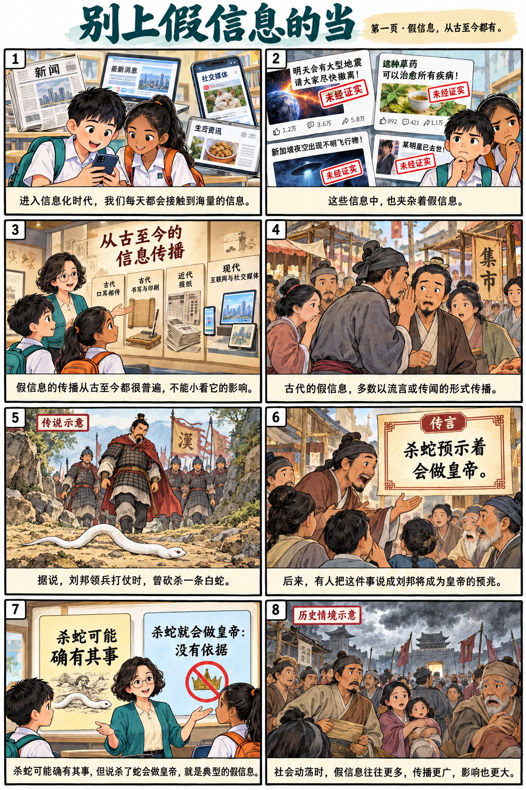
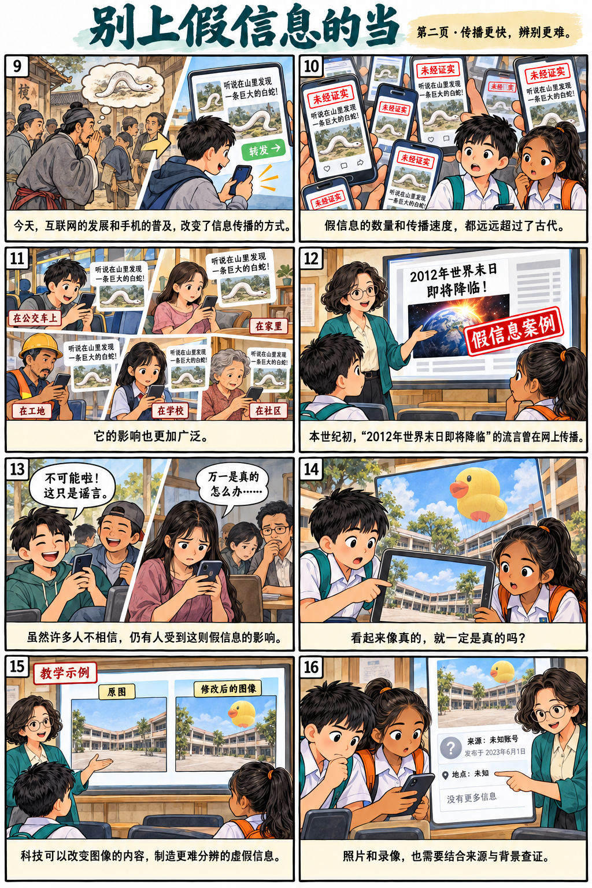
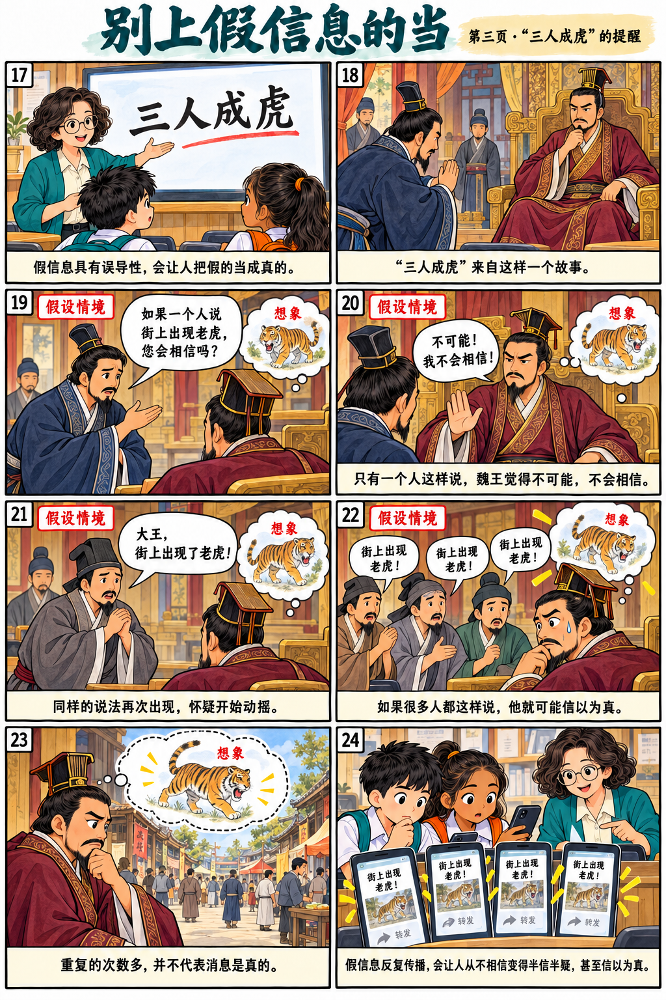
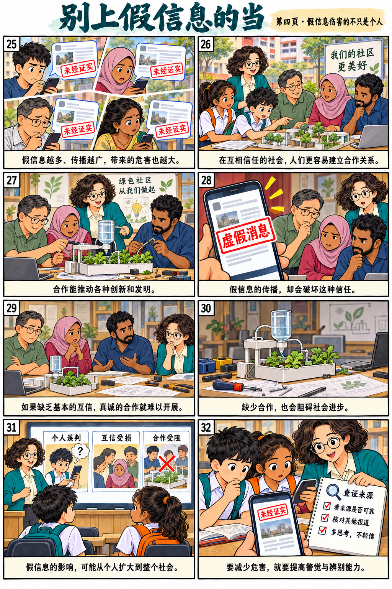
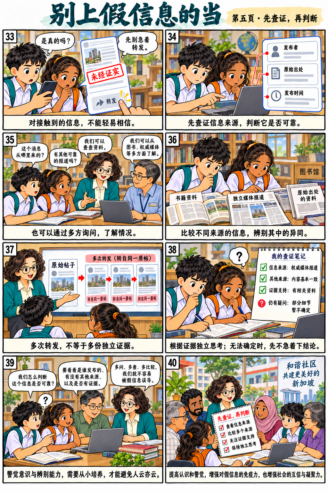

全文与漫画回读
漫画帮助理解，作答依据回到原文。五页原图、四十格全部保留。
第1段 · 漫画1—3格
进入信息化时代，我们每天都会接触到海量的信息，其中不乏假信息。假信息的传播从古至今都是很普遍的现象，千万不能小看它的影响。
看本段图文第2段 · 漫画4—8格
古代就有假信息，只不过那时候多数以流言或传闻的形式传播。据说，汉朝的刘邦在领兵打仗时，曾砍杀一条白蛇。后来有传言说这条蛇是天帝的儿子，杀死这条蛇预示着刘邦会成为新的皇帝。杀蛇可能确有其事，但说杀了蛇会做皇帝就是典型的假信息。类似的传言在不同的朝代都有所流传。当社会动荡的时候，假信息往往变得更多，传播得更广，影响也更大。
看本段图文第3段 · 漫画9—13格
在资讯科技发达的今天，由于互联网的发展和手机的普及，假信息的数量和传播速度都远远超过了古代，影响更是无远弗届。本世纪初，一则“2012年世界末日即将降临”的流言借助互联网传遍世界各地。虽然大多数人将这个流言当作荒诞不经的笑话，但从各地发生的事件中，我们仍然可以看到，不少人受到这则假信息的影响。
看本段图文第4段 · 漫画14—16格
科技的发展也让信息真假的辨别变得更加困难。以前，我们只要看到照片或录像，就能确认事情的真假。但是，如今人们却可以轻松地利用科技将图像改头换面，制造出更难分辨的虚假信息，让人更难发现事情的真相。
看本段图文第5段 · 漫画17—24格
假信息有很大的误导性，会让人把假的当成真的。有个成语“三人成虎”，来自这样一个故事。古代有个大臣曾这样提醒魏王：如果只有一个人对魏王说街上出现老虎，他一定觉得不可能，也不会信。但如果很多人都跟他这样说，他就会信以为真。这个故事告诉我们，假信息重复的次数多了，很容易使人分不清真伪。假信息的传播，会让原本不相信的人也变得半信半疑，甚至最终落入假信息的陷阱。
看本段图文第6段 · 漫画25—31格
假信息越多，传播越广泛，带来的危害也就越大。在一个人与人互相信任的社会，人们更容易建立合作关系，因此也更容易推动各种创新和发明。假信息的传播会破坏这种信任。如果人们缺乏基本的互信，真诚的合作也就无从说起。这样的社会很难取得进步，更无法跟上时代的步伐。
看本段图文第7段 · 漫画32—39格
要减少假信息的危害，就要提高我们对假信息的警觉与辨别信息真伪的能力。我们对所接触的信息，不能轻易相信。我们可以通过对信息来源的查证，确定信息是否可靠，也可以通过多方询问、比较来辨别信息的真假。这种警觉意识与辨别能力需要从小培养。这样一来，孩子长大后才能具有独立思考的能力，而不会人云亦云，轻易受到假信息的影响。
看本段图文第8段 · 漫画40—40格
只要我们提高对假信息的认识和警觉，就一定可以增强对假信息的免疫力，增强社会的互信与凝聚力。
看本段图文



